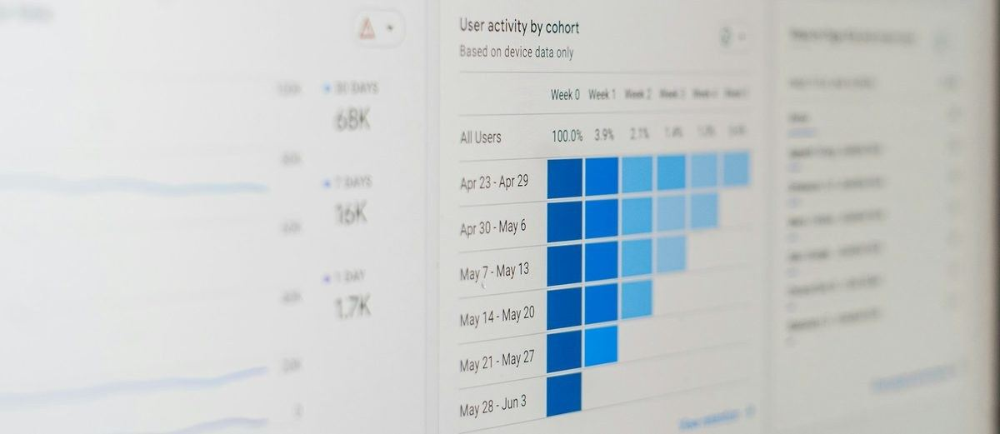

Basics of Technical Communication
Course briefing, assessments, and the fundamentals of communication. This is a self-study week: read each slide, then do the activity on it.
Department of Languages & General Studies · Faculty of Business and Communication (FPK) · UniMAP · Semester 1, 2026/2027
Three course outcomes (COs)
Everything in SMB31202 builds one of these three abilities. Tap each card.
Analyse
Ability to analyse academic and professional texts based on the fundamentals of technical communication.
Evaluate & produce
Ability to evaluate multiple sources for the production of well-structured technical texts with appropriate citation conventions.
Defend
Ability to defend sustained arguments in formal discussions on technical topics.
Speaking in a formal group discussion about a technical topic builds which outcome?
How each outcome is assessed
| Course outcome | Assessment | Percentage | Individual / Group |
|---|---|---|---|
| CO 1 | Reading Test | 30% | Individual |
| CO 2 | Task 1: Poster Assignment | 20% | Group |
| Task 2: Writing Test | 20% | Individual | |
| CO 3 | Task 1: Individual Presentation | 10% | Individual |
| Task 2: Group Discussion | 20% | Group | |
| Total | 100% |
Split by course outcome
Which single assessment carries the most marks?
From marks to grades
| Marks | Grade |
|---|---|
| 80–100 | A |
| 75–79 | A- |
| 70–74 | B+ |
| 65–69 | B |
| 60–64 | B- |
| 55–59 | C+ |
| 50–54 | C |
| 45–49 | C- |
| 40–44 | D+ |
| 35–39 | D |
Read the table. Type the grade (e.g. B+).
A total of 81 marks gets an .
A total of 72 marks gets a .
A total of 58 marks gets a .
A total of 47 marks gets a .
Assessment briefing
Four assessments, 100% continuous. No final examination.
Individual 60% · Group 40%
The Speaking Assessment is an individual presentation (10%) and a group discussion (20%). The Poster is briefed in Week 5 and submitted in Week 12. All assessments are aligned to CEFR B2 to C1 under the ELHAM framework.
1 h 30 min, face-to-face, on paper, 30 marks
Section A · Reading comprehension · 20 marks
One engineering passage of about 600 words. Five parts: gapped text, matching headings, multiple choice, vocabulary in context, short answer. Cambridge C1 style.
Section B · Theory · 10 marks
Basics of Technical Communication (Week 1): barriers, channels, CMAPP model.
Preparing for the Workplace (Week 2): tailoring a résumé, claims versus evidence.

This week is examinable. What you learn today comes back in Section B of the Reading Test. There is a self-test at the end of this lesson.
Which topic from this week is named for Section B?
4 members, one A1 poster, submitted as PDF online
The task
An engineering problem linked to a Sustainable Development Goal (SDG): introduction, three problems, three solutions, a recommendation, references.
At least three credible sources, two from Scopus or Web of Science.
Both assignments in this course are related to the SDGs.
Week 5
Briefing and group formation.
Week 6
Supervision 1: title and scope.
Week 10
Supervision 2: outline and draft.
End of Week 12
Submission.
Your group has found four sources: two news websites, one Scopus article and one company report. Is that enough?
45 minutes, 220 to 260 words, on paper
The task
A workplace scenario, one chart and one table. Write a report to a manager: introduction, key findings, and a justified recommendation. Cambridge C1 report format.
Marked on (5 marks each)
- Content and task fulfilment
- Organisation and coherence
- Use and interpretation of visual data
- Language accuracy and register
Who is the reader of your Writing Test report?
Sustained argument in formal discussion
Individual presentation
You receive a scenario, an audience and an assigned option. Two minutes to prepare. Present a structured proposal with evidence.
Group discussion
Four candidates compare their options against the board's criteria and reach one recommendation.
Marked on accuracy, range and register, fluency, and interactive effectiveness. CEFR-anchored rubric, every criterion out of 5.
In Task 2, what must the four candidates achieve by the end?
The fourteen weeks at a glance
Blended: Weeks 1 to 7 alternate online and face-to-face. Assessment weeks are always face-to-face.
Semester timeline
Weeks 1–2
Basics of Technical Communication · Preparing for the Workplace (examined in Section B of the Reading Test).
Weeks 5–6
Poster briefing and group formation · Supervision 1.
Week 8
Reading Test (30%).
Week 10
Writing Test (20%) · Poster Supervision 2.
Week 12
Poster submission (20%).
Weeks 13–14
Speaking Assessment (30%).
The Writing Test is in Week 10. How will you sit it?
What we expect from you
Attendance
Face-to-face weeks are where the practice happens. Assessment weeks are compulsory. Online weeks have tasks with deadlines.
Academic integrity
Paraphrase and cite. Copying, including from AI tools without declaration, is plagiarism under university rules and is checked.
Submissions
Poster by the deadline in Week 12, one PDF per group, via the course portal. Late submissions carry a penalty.
Where things live
Slides, worksheets, rubrics, sample papers and announcements on the course portal. Check it before every class.
- I know the dates of my three individual assessments (Weeks 8, 10, 13–14).
- I understand that using AI text without declaring it is plagiarism.
- I have found the course portal and checked the announcements.
First of all, what is communication?
Week 1: Basics of Technical Communication.
Communication
How communication travels
↩ Feedback. In a one-to-one conversation, sender and receiver swap roles. In a large organisation, feedback is not guaranteed.
Complete the definition from memory. Then press Check.
Communication is the of transmitting and information, ideas, thoughts, or feelings between individuals or groups through symbols, signs, or behaviours to establish understanding.
Four types of communication
Verbal
Words, spoken.
Written
Words, written.
Non-verbal
No words or sounds.
Visual
Visual media and aids.
The next four slides look at each type in turn.
Verbal communication
- The standard method of communication that we use on a day-to-day basis.
- Relies on words to convey a message.
- Helps in expressing our thoughts, emotions and sentiments.
Which one is verbal communication?
Four types of verbal communication
Small group
More than two people are involved, such as press conferences, board meetings, team meetings.
Public
One individual addresses a large gathering of people: election campaigns and public speeches (one sender, several receivers).
Intrapersonal
A private, restricted form. A silent conversation with ourselves, juggling the roles of sender and receiver of our own thoughts and actions.
Interpersonal
Between two individuals (one-on-one). They swap the roles of sender and receiver to communicate more clearly.

Written communication
A sender conveys a message through written words.

Key advantage: unlike some other forms of communication, written messages can be edited and rectified before they are sent to the receivers.
What can you do with written communication that is hard to do in a live speech?
Non-verbal communication
- Communication without using words or sounds.
- Uses gestures, body language, facial expressions, eye contact, clothing (appearance), tone of voice, and other cues.
- Rarely used alone. We usually use it together with verbal communication.
True or false: non-verbal communication is usually used on its own.
Visual communication
The visual transmission of ideas and information through video, animation, images, GIFs, and other visual media. The message is understood or expressed with the help of visual aids.

Why communication is so important
Video: Communication: Basics and Importance
Watch the short video, then answer the reflection below.
▶ Open the video on YouTubeIn 30+ words: which of the four types of communication (verbal, written, non-verbal, visual) do you think an engineer uses most at work, and why?
Check your answer
There is no single right answer. A strong answer:
- names one of the four types correctly;
- gives a workplace example from the deck (e.g. reports and memos for written, meetings for small-group verbal, maps or posters for visual);
- explains why with a reason (e.g. written messages can be edited before sending).
Barriers to communication
Why messages fail to get through, and what organisations can do about it.
A barrier acts like a sieve
A barrier acts like a sieve, allowing only a part of the message to filter through. As a result, the desired response is not achieved.
To communicate smoothly and effectively, you need to know:
- how barriers operate,
- why they cause misunderstanding, and
- how to minimise their negative impact.
Watch: video on barriers to communication. Source for the barriers diagram: educationleaves.com/barriers-to-communication.
What is the result of a communication barrier, according to the sieve image?
Barriers can start inside one person
Barriers are not only found in organisations. They can exist in an individual, between two people, and across a whole organisation. Barriers inside one person are intrapersonal barriers. Learn these four:
Wrong assumptions
Varied perceptions
Differing background
Wrong inferences
Recall the four intrapersonal barriers. Then press Check.
Wrong , varied , differing and wrong .
Barriers can exist in a whole organisation
- Communication barriers are not only limited to one or two people; they exist in entire organisations.
- In a large organisation, the flow of communication is usually downward, and feedback is not guaranteed.
- All organisations have communication policies that describe the protocol to follow. It is the structure and complexity of this protocol that usually causes barriers.
Too many transfer stations
Fear of superiors
Use of inappropriate media
Information overload
Intrapersonal
Inside one person
- Wrong assumptions
- Varied perceptions
- Differing background
- Wrong inferences
Organisational
Across a whole organisation
- Too many transfer stations
- Fear of superiors
- Inappropriate media
- Information overload
What usually causes communication barriers in an organisation?
Three barriers in detail
The more links there are in a communication chain, the greater the chances of miscommunication. The message can get distorted at each level, not only because of poor listening or lack of concentration, but for several other reasons. Some people may filter out the parts of the message they consider unimportant.
Fear or awe of superiors prevents subordinates from speaking frankly.
When deciding the medium for a particular communication, consider its advantages, disadvantages and potential barriers. Cost, time, type of message and intended audience are the factors to consider.
Which four factors should you consider when choosing a medium?
Information overload
What it is
An excess of information available to a person who is trying to complete a task or make a decision.
Usual results: fatigue, disinterest and boredom. Vital, relevant information gets mixed up with too many irrelevant details, and is therefore ignored by the receiver.
How to reduce it
- Screening of information is mandatory.
- Direct messages only to the people likely to benefit from the information.
- Highlight the major points and leave out the irrelevant details.

Technical communication
What makes workplace communication different, and a model for planning it.
What is technical communication?
- An important element in any workplace and organisation.
- Has specific purposes and audiences.
- Used to communicate with colleagues and superiors.
- Used for presentations at conferences and meetings.
To get something done within an organisation, or help someone else get something done.The purpose of technical communication

Is a presentation at a project meeting technical communication?
1. Purpose and 2. Audience
| Personal essay | Academic writing | Technical communication |
|---|---|---|
| To convey personal observations or feelings. | To communicate what you know about the topic, in a way that justifies a high grade. | To get something done within an organisation, or help someone else get something done. |
| Personal essay | Academic writing | Technical communication |
|---|---|---|
| Readers from all walks of life. The writer expresses views, shares experiences and expects understanding from readers. | The lecturer requests the assignment and reads it from beginning to end. The writer writes according to the topics and criteria set by the lecturer. | Specific readers. The writer responds to the needs of readers at the workplace, and expects understanding and specific actions after reading. |
What does a technical writer expect from readers that a personal essay writer does not?
3. Organisation and 4. Style of writing
| Personal essay & academic writing | Technical communication |
|---|---|
| Standard use of topic sentences and transitional expressions. Readers need to read in depth before the main point and the organisation become apparent. | Headings help readers form their perceptions at a single glance. Headings draw attention to the information and let readers read only what they want or need to read. |
| Personal essay | Academic writing | Technical communication |
|---|---|---|
| Casual, conversational and predictable. Uses examples and descriptions. | Requires depth, logic, clarity, supporting evidence and grammar. | Simple, concise and straightforward (easily understood). Short sentences and predictable sentence order. |
Why do technical documents use headings?
5. Tone and 6. Graphic elements
| Feature | Personal essay | Academic writing | Technical communication |
|---|---|---|---|
| Tone | Expressive, portraying emotions such as sadness, excitement and humour. | Academic, formal and objective. | Objective and business-like. |
| Graphics | Rarely used. | Sometimes used to explain and persuade. | Frequently used to help readers find important information as quickly as possible. |
Three kinds of writing at a glance
The six features side by side. Technical communication is the column on the right.
| Personal essay | Academic writing | Technical communication | |
|---|---|---|---|
| 1 · Purpose | Share personal observations or feelings | Show what you know, to earn a high grade | Get something done in an organisation |
| 2 · Audience | Readers from all walks of life | The lecturer | Specific readers who will act |
| 3 · Organisation | Topic sentences and transitions | Headings, readable at a glance | |
| 4 · Style | Casual, conversational | Depth, logic, clarity, evidence | Simple, concise, straightforward |
| 5 · Tone | Expressive | Academic, formal, objective | Objective and business-like |
| 6 · Graphics | ● | ●● | ●●● |
The CMAPP model
Five things to think about before you communicate: Context, Message, Audience, Purpose, Product. Tap each card.
Context
The surrounding situation, such as time and place, the relationship between sender and receiver, and other factors that affect the communication.
Message
The content of the communication (e.g. message, information).
Audience
Your listeners or readers. Primary audience: the people you want to reach first. Secondary audience: other people you want to reach as well.
Purpose
The reason you are communicating (to remind, to inform …) and the reactions or responses you expect from your audience.
Product
The physical form of the communication and its appearance (e.g. reports, memos, letters, posters).
Which CMAPP element is it?
You write a report for your manager, and the manager will forward it to the finance team. The finance team is your …
Plan a real message with CMAPP
Think of one message you will need to send soon (e.g. an e-mail to your lecturer, or a notice for your poster group). Write one line for each element: Context, Message, Audience (primary and secondary), Purpose, Product.
Check your answer
- Context: you mention time, place and your relationship with the receiver.
- Message: you state the actual content or information.
- Audience: you name a primary audience (reached first) and, if any, a secondary audience.
- Purpose: you give the reason (to remind, to inform …) and the response you expect.
- Product: you name the physical form (e-mail, memo, letter, poster …).
Importance of communication
Your knowledge and ideas will be useless unless you communicate them to others.Importance of communication · for yourself
For the organisation
All organisations require up-to-date information to operate efficiently.
For yourself
Your knowledge and ideas will be useless unless you communicate them to others. Communication expertise will be critical to your career success.
According to the deck, why is communication important for you personally?
Week 1 self-test · Part 1
A message passes through five levels of management and arrives distorted. Which barrier is this?
In the CMAPP model, “the physical form of communication and its appearance” is the …
Which tone fits technical communication?
An engineer silently thinks through what to say before a meeting. This is …
Week 1 self-test · Part 2
What is the best way to reduce information overload in an organisation?
Which is the purpose of technical communication?
You must tell a colleague some confidential information. Which channel does the deck recommend?
Name the odd one out: which is NOT an intrapersonal barrier?
You know the basics.
Barriers, types of communication and the CMAPP model will come back in the Week 8 Reading Test. Next week: preparing for the workplace.
← Back to all weeks